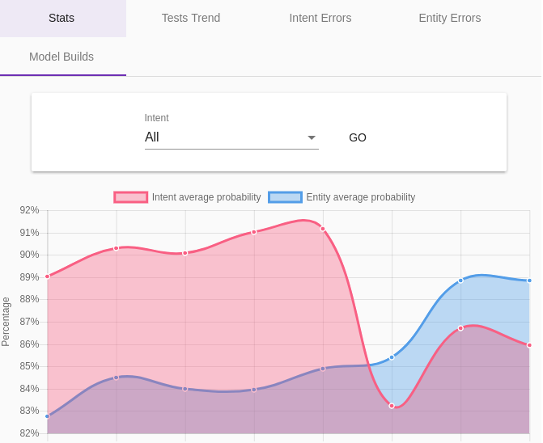
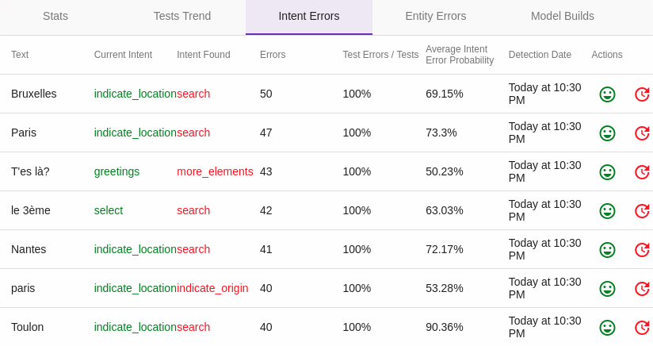

Le menu Model Quality
Le menu Model Quality (ou NLU QA) permet d'évaluer et de suivre dans le temps la qualité/pertinence/performance des modèles conversationnels.
L'onglet Model Stats
Cet écran présente des graphes pour suivre l'évolution de plusieurs indicateurs de la qualité du modèle conversationnel :
-
Pertinence : les scores des algorithmes de détection sur les intentions (Intent average probability) et sur les entités (Entity average probability)
-
Trafic / erreurs : le nombre de sollicitations du modèle (Calls) et le nombre d'erreurs (Errors)
-
Performance : le temps de réponse du modèle (Average call duration)

L'onglet Intent Distance
Les métriques présentées en tableau dans cet page (Occurrences et Average Diff) permettent d'identifier les intentions plus ou moins proches dans le modèle, notamment afin d'optimiser la modélisation.
L'onglet Model Builds
Cet écran présente des statistiques sur les dernières reconstructions du modèle. Il s'agit donc d'indications sur la performance du modèle.
L'onglet Tests Trends
Les tests partiels de modèle constituent un moyen classique de détecter les erreurs de qualification, ou les problèmes de proximité des intentions (ou entités) entre elles.
Il s'agit de prendre une partie du modèle actuelle au hasard (par exemple 90% des phrases du modèle) afin de construire un modèle légèrement moins pertinent, puis de tester les 10% restant avec ce nouveau modèle.
Le principe posé, il ne reste plus qu'à répéter le processus un certain nombre de fois pour que les erreurs les plus fréquentes soient présentées à un correcteur manuel.
Précision que ces tests ne présentent une utilité qu'avec des modèles déjà conséquents.
Cet onglet donne l'évolution de la pertinence des tests partiels de modèle.
Par défaut, les tests sont programmés pour être lancés de minuit à 5h du matin, toutes les 10 minutes. Il est possible de configurer ce comportement avec la propriété
tock_test_model_timeframe(par défaut :0,5).
L'onglet Test Intent Errors
Cet écran présente les résultats des tests partiels de détection d'intentions (voir ci-dessus), avec le détails des phrases/expressions reconnues différemment du modèle réel.

Dans cet exemple, aucune "vraie" erreur n'a été détectée. On peut toutefois constater que dans certains cas le modèle se trompe systématiquement, avec une probabilité élevée.
Pour chaque phrase il est possible via la colonne Actions de confirmer que le modèle de base est correct (avec Validate Intent) ou de corriger l'erreur détectée (Change The Intent).
Il est intéressant d'analyser périodiquement ces écarts, certaines différences s'expliquant bien, étant même parfois "assumées" (faux négatifs), d'autres pouvant réveler un problème dans le modèle.
L'onglet Test Entity Errors
A l'instar de Intent Test Errors pour les entités, cet écran présente les résultats des tests partiels de détection des entités.

Il est intéressant d'analyser périodiquement ces écarts, certaines différences s'expliquant bien, étant même parfois "assumées" (faux négatifs), d'autres pouvant réveler un problème dans le modèle.
Continuer...
Rendez-vous dans Menu Settings pour la suite du manuel utilisateur.
Vous pouvez aussi passer directement au chapitre suivant : Développement.